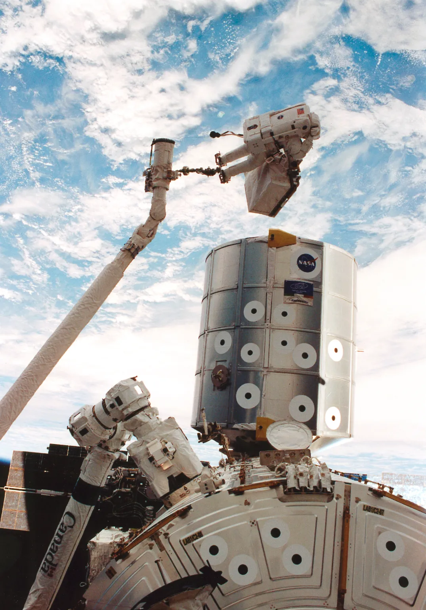

International Space Station
A giant scientific lab floating 400km above Earth.
Built by 15
nations and continuously inhabited since the year 2000.
Track the ISS Live

How it All Began

Assembly
Building the ISS was kind of like the world's most complicated LEGO
set, except the pieces were built in different countries, launched
into space on rockets, and snapped together while floating 400
kilometers above Earth!
The ISS is the largest
human-made object ever to orbit Earth. It weighs about as much as
320 cars and has about as much living space inside as a six-bedroom
house. Its solar panels — the big wing-like things that collect
energy from the Sun — cover an area bigger than half a football
field.
It took 36 Space Shuttle flights and 6 Russian
rocket launches just to get all the pieces up there. Astronauts from
many different countries helped carry supplies, swap out crew
members, and bring up new equipment.
Spacewalks
To put the space station together, astronauts had to go outside in
spacesuits and work in the vacuum of space. This is called a
spacewalk, or an EVA (Extra-Vehicular Activity).
Imagine
trying to connect electrical cables while wearing big puffy gloves,
floating in zero gravity, with the Earth spinning below you. That's
what these astronauts did!
The very first ISS spacewalk
happened on December 7, 1998. Two astronauts connected cables
between the station's first two pieces. Since then, more than 260
spacewalks have taken place, that's more than in all other space
programs put together!
One spacewalk even lasted nearly 9
hours — almost a full school day!
One really cool moment
happened in 2007 when astronaut Scott Parazynski, who was also a
doctor, used his medical skills to stitch up a torn solar panel
while dangling at the very end of two robotic arms stuck together.
Like a doctor fixing a wound, but in space!
Science Lab
The ISS isn't just cool to look at — it's a working science
laboratory! Scientists use it to run experiments that can only be
done in space, where there's almost no gravity (called
microgravity).
They study things like:
• How the human body changes in space
• How materials and liquids behave without gravity
• New medicines and technologies that could help people on Earth
The station has been doing science nonstop since the
year 2000, and the discoveries keep adding up!
Team
The ISS isn't owned by just one country, it belongs to a team of
nations working together. The US, Russia, Europe, Japan, and Canada
all play important roles. Each country built different parts,
launched them into space, and connected them together.
Every day, astronauts from different countries live and
work side by side on the station. Even though these countries
sometimes disagree about things back on Earth, they manage to
cooperate in space to do something truly incredible. That's pretty
amazing!
The Space Shuttle
The Space Shuttle was a really special spacecraft. It launched like a rocket, flew through space, and then landed like an airplane — and it could be used again and again! Five Space Shuttles flew missions: Columbia, Challenger, Discovery, Atlantis, and Endeavour. The Space Shuttles played a huge role in building the ISS, carrying pieces of the station and the astronauts who put it all together.
Learn more about the Space Shuttle →